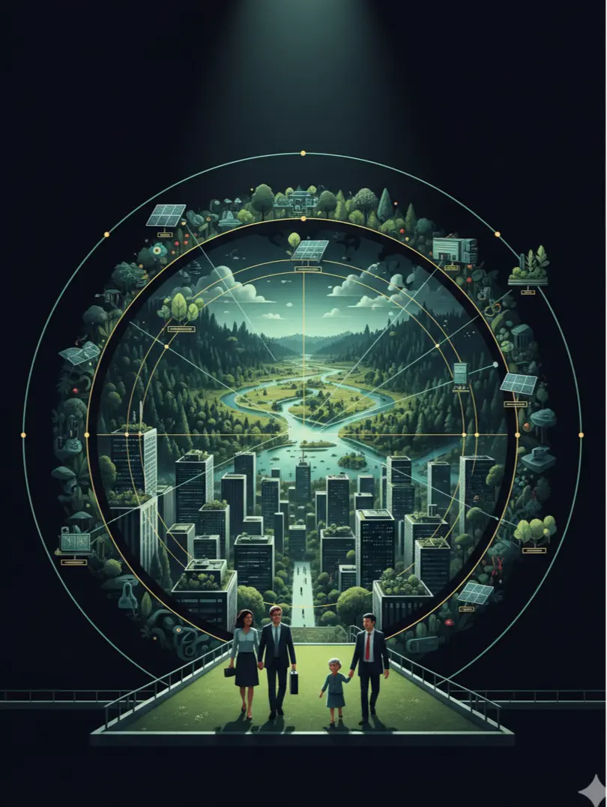

Dr. Chijioke J. Evoh contributed to a policy brief developed within the Future Earth Fellows Programme, supporting the Global Sustainable Development Report (2016) process coordinated by the United Nations . The brief focuses on the “nexus approach” , examining the interconnections between key systems such as water, energy, food, and ecosystems in advancing sustainable development.
The contribution supports global analysis on how integrated systems thinking and cross-sector coordination can improve policy effectiveness and sustainability outcomes. It highlights the importance of addressing interdependencies between natural and socio-economic systems to achieve the Sustainable Development Goals (SDGs) .
This work reflects engagement in global research-policy collaboration, contributing to discourse on development systems integration, environmental governance, and sustainable resource management.
This report is designed primarily for:
The brief adopts a nexus-based analytical framework that integrates insights from sustainability science, urban development studies, public health research, and ecosystem management. It draws on interdisciplinary research contributions from Future Earth Fellows and related sustainability research networks.
The framework emphasizes the interconnected nature of global sustainability challenges and applies systems thinking to examine the relationships between human wellbeing, urbanisation dynamics, and ecosystem services. By exploring cross-sectoral interactions and policy implications, the analysis highlights the need for integrated governance and collaborative knowledge production to address complex sustainability challenges.

Sustainable Development
Urban Governance
Public Health
Ecosystem Services
Food Systems
Livelihood Resilience
Urbanisation
Environmental Policy
Climate Resilience
Science Policy
Explore related work on employment policy and labour market systems advisory


.webp)